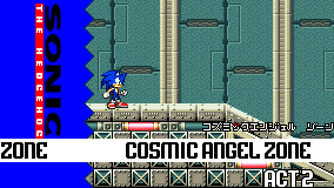
Location: Cosmic Angel Zone
Difficulty: Hard


Location: Cosmic Angel Zone
Difficulty: Hard
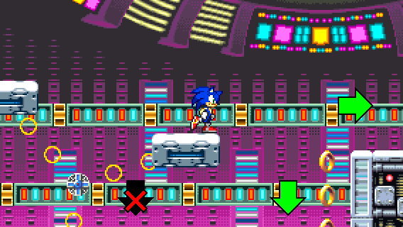
STEP 1:
Jump on one of the chained platforms that spin around and jump off to the right side.
You can also fall off and collect the rings below to take a dash panel and skip the next step if you launch yourself to the right.
Don't fall off before taking a platform, or you won't be able to go back up!
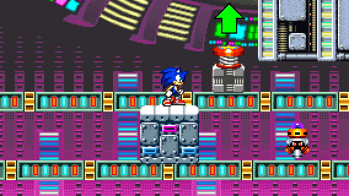
STEP 2:
If you don't take the dash panel, you have to jump on a moving block and then jump on a spring on another moving block.
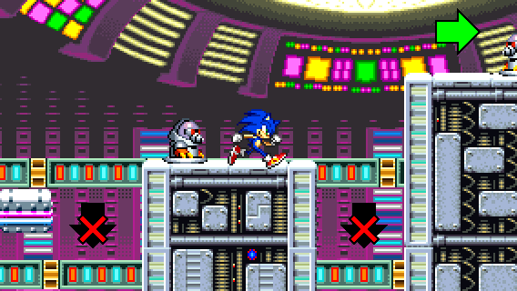
STEP 3:
Traverse the dangerous obstacles. Be careful of moving spikes and Mogu badniks, or else you will fall.
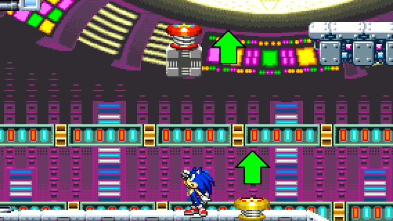
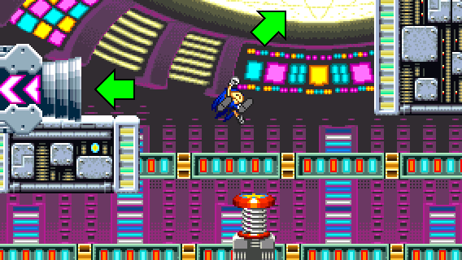
STEP 4:
After traversing the dangerous obstacles, you will find a yellow spring and a red spring on a moving block above. Jump on those springs to go up.
When taking the red spring, you can either go to the right, or take the warp cannon to collect rings.
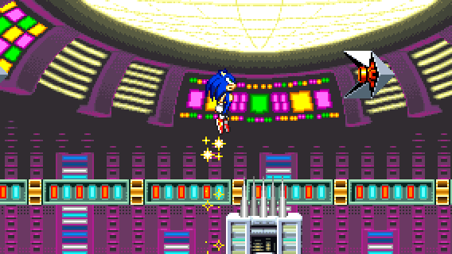
STEP 5:
Traverse more dangerous obstacles. You have to jump above walls with spikes on top 3 times.
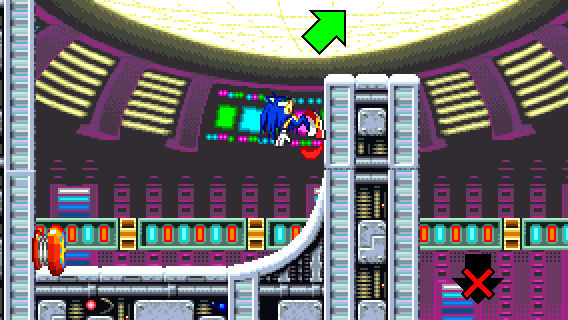
STEP 6:
After the third wall, take the spring and launch yourself forward by holding right.
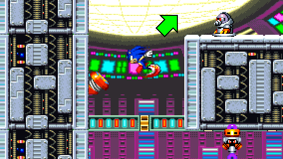
STEP 7:
Finally, after taking the springs to descend, you will have enough speed to launch yourself upwards and move on.
You can take the diagonal spring to get up easily.
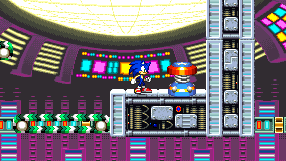
And voila! You found the Special Spring location!
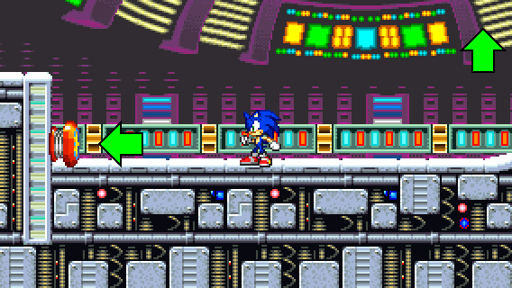
RECOVERY 1:
If you fell off during STEP 3, you can go back up by taking a red spring on the left and launch yourself updwards to the left where you can land on a moving block.
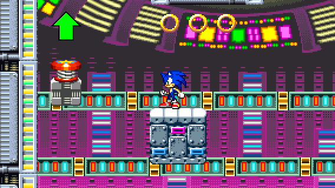
Then, jump on red springs on moving blocks to go back to where you came and repeat STEP 3.
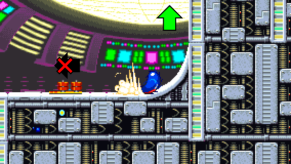
RECOVERY 2:
If you didn't go far enough during STEP 6, you will land on a platform with a dash panel.
Instead of taking the dash panel, build a lot of speed from a Spin Dash to reach the top of the wall.
If you play as Tails or Knuckles, you can just fly or climb up the wall.
If you take the dash panel and fall off, you won't be able to go back up!